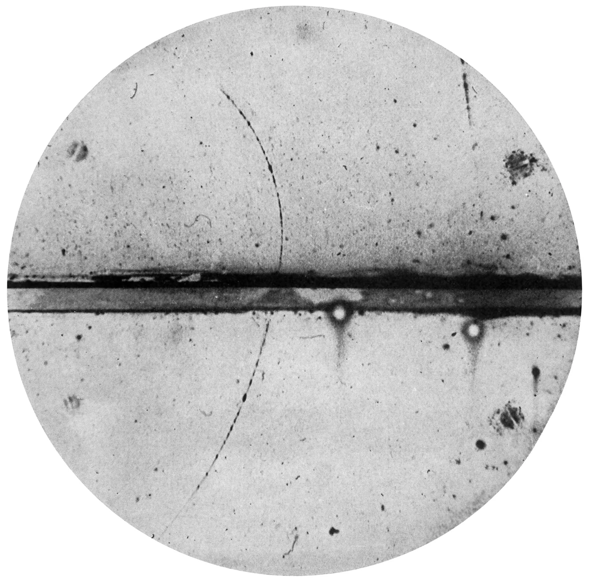
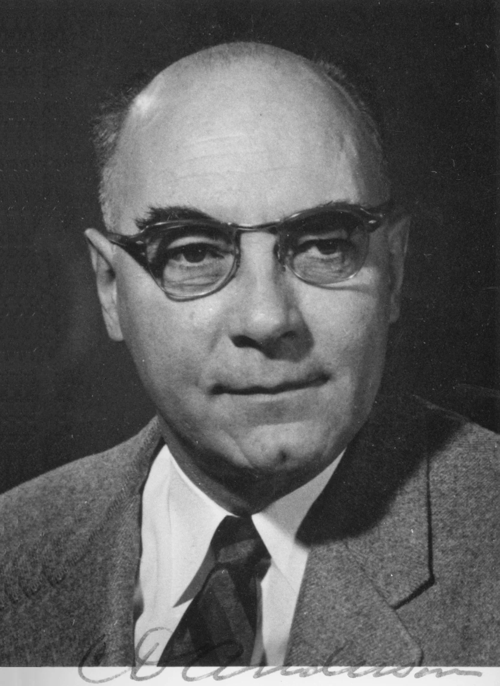
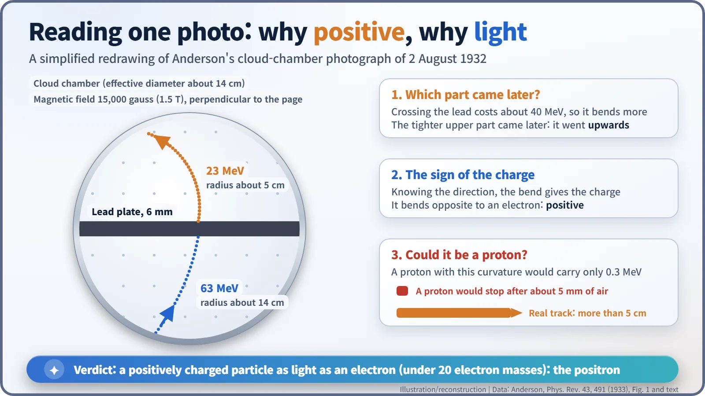
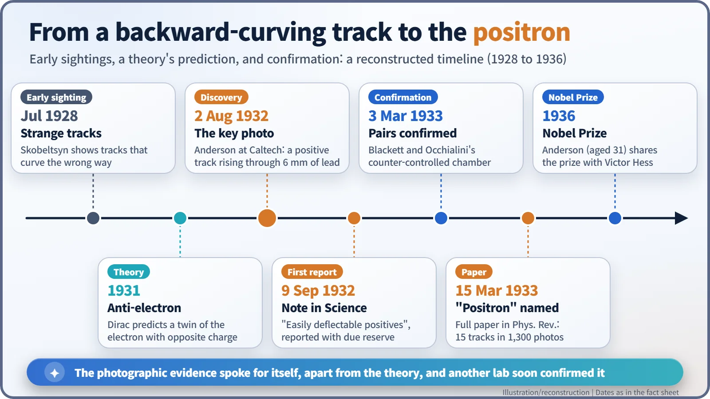

Nuclear History · 047
The Electron That Went Uphill — Carl Anderson Discovers the Positron (1932)
A 6 mm lead plate showed which way a cosmic-ray particle was moving, and that settled its charge.
On 2 August 1932, Carl Anderson at Caltech photographed a cosmic-ray track that crossed a 6 mm lead plate inside a magnetized cloud chamber. By working out which way the particle was travelling, he showed it was positively charged yet as light as an electron: the positron, the first antimatter particle ever identified.
A puzzle in a photograph
Let's start with a puzzle. The photograph below was taken through the round window of a cloud chamber. The thick horizontal band across the middle is a lead plate. The faint dotted line running above and below it is the trail of a single tiny particle. So which way was it travelling: down through the plate, or up?

Since the chamber was recording cosmic rays, which rain down from the sky, "downwards" seems the obvious answer. It is the wrong one. The person who read this photograph correctly was a 26-year-old physicist at Caltech (the California Institute of Technology), Carl David Anderson (1905–1991). His answer revealed the first piece of antimatter ever identified: the positron. [1]
A young man photographing visitors from space
In 1930, just after Anderson finished his PhD at Caltech, his mentor Robert A. Millikan (1868–1953) suggested a project: measure the energies of cosmic rays, the high-energy particles that pour into Earth's atmosphere from space. That summer the two of them designed a vertical Wilson cloud chamber. A cloud chamber works a bit like an aircraft's contrail: an invisible particle leaves a line of tiny droplets wherever it passes. Anderson placed the chamber in a strong magnetic field of 15,000 gauss (1.5 tesla). In a magnetic field, a charged particle travels on a curve. The faster it moves, the gentler the curve, and positive and negative charges curve in opposite directions. [1]

Tracks that looked like electrons but curved the "wrong" way had been seen before. In July 1928, at a conference in Cambridge, the Soviet physicist Dmitri Skobeltsyn (1892–1990) showed photographs of such tracks. In Paris, Irène and Frédéric Joliot-Curie reportedly took similar trails for protons. The trouble was that, without knowing which way a particle was moving, a positive particle going one way looks exactly like an ordinary electron going the other way.
2 August 1932: the lead plate breaks the tie
Anderson's trick was to set a 6 mm lead plate across the middle of the chamber. A particle that punches through lead loses energy and slows down, so after the plate it curves more tightly. The gentler part of the track came first; the tighter part came second.
In the photograph of 2 August 1932, the track below the plate carried 63 MeV (million electron volts) and the track above it 23 MeV. In terms of curvature, the radius was about 14 cm below the plate and about 5 cm above it. The more sharply curved upper section came later, so the particle had travelled upwards. Once the direction was known, the curve gave away the charge: it bent the opposite way to an electron. The particle was positive. [1]
Could it simply be a proton, the familiar positive particle? Anderson checked. A proton bent that sharply would carry only 0.3 MeV and would stop after about 5 mm of air. The visible track ran on for more than 5 cm. He also ruled out the idea that two unrelated electron tracks had happened to line up, since tracks this sharp turned up only about once in 500 exposures. What remained was a positively charged particle about as light as an electron. [1]

A cautious note, and a new name
Anderson gathered more photographs over the next few weeks, then published a short note in Science on 9 September 1932, titled "The Apparent Existence of Easily Deflectable Positives". He later described it as a report made "with due reserve in interpretation". Its key sentence read: "For the interpretation of these effects it seems necessary to call upon a positively charged particle having a mass comparable with that of an electron." [2] [4]
The full paper, "The Positive Electron", appeared in Physical Review on 15 March 1933. Of 1,300 cosmic-ray photographs, 15 showed positive particles that could not be protons, and their mass had to be less than 20 times that of the electron. This paper was also where the famous photograph of 2 August was first published. "These particles will be called positrons," it announced, and it even proposed calling the ordinary electron a "negatron" for symmetry. That second name never caught on. According to a story often told, the name "positron" itself was suggested by an editor at the journal. [1] [5]
On the theoretical side, the British physicist Paul Dirac had proposed in 1931 an "anti-electron": a particle with the electron's mass but the opposite charge. Anderson, however, recalled that he was not hunting for Dirac's particle; he was simply following the data in his cloud chamber.
Confirmation from Cambridge
Across the Atlantic, at the Cavendish Laboratory in Cambridge, Patrick Blackett (1897–1974) and the Italian physicist Giuseppe Occhialini (1907–1993) were on the same trail. Their cloud chamber fired only when Geiger counters above and below it clicked at the same moment, so the cosmic rays effectively took their own pictures, and about 80 per cent of the photographs showed tracks. In a paper published in the Proceedings of the Royal Society on 3 March 1933, they confirmed the positron and interpreted the showers of positive and negative electrons as pair production, energy turning into an electron–positron pair, linking the result to Dirac's theory. Because they had held back to gather firmer evidence, Anderson's report came out first. [3] [4]

A Nobel Prize, and a particle at work in hospitals
In 1936, at the age of 31, Anderson shared the Nobel Prize in Physics with Victor F. Hess (1883–1964), who had discovered cosmic radiation. That same year Anderson and his student Seth Neddermeyer found another new particle in cosmic rays, the muon. [6]
The positron is still at work today, in hospitals. When a positron meets an electron, the two annihilate and send out two gamma rays of 0.511 MeV in opposite directions. PET scanners detect those pairs to build images of the body. The answer to one photographic puzzle opened the door to the world of antimatter.